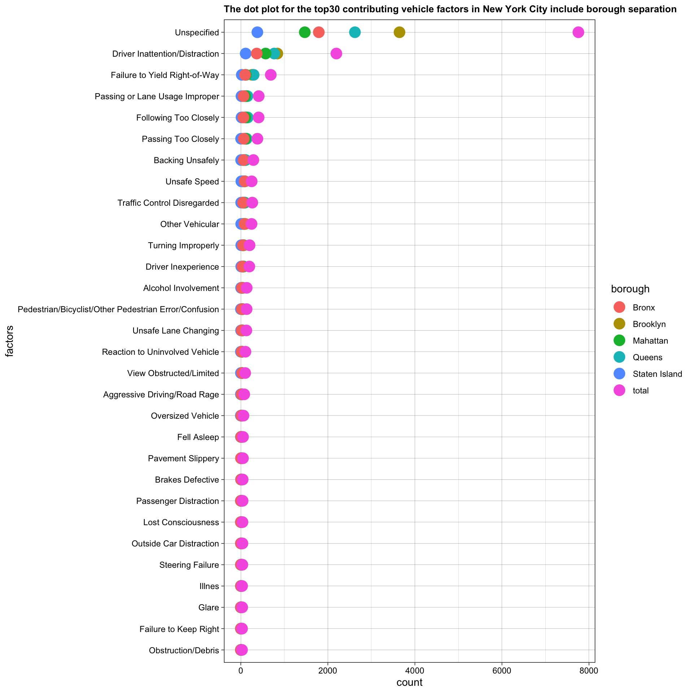

Chapter 4 Missing values
4.1 Motorcycle Accident Missing Pattern
For this first draft, we will focus on the newest November motorcycle accident data to provide a clear missing pattern with explaination.

We summarize this November-2021 data to provide a sufficient and recognizable missing pattern.
For better understanding for the first draft, I will explain those variables there. In the complete version we will introduce variable explaination for all datasets in data source chapter.
| Column Name | Meaning |
|---|---|
| vehicle_type_code_# | the type of vehicle based on the selected vehicle category (ATV, bicycle, car/suv, ebike, escooter, truck/bus, motorcycle, other) |
| contributing_factor_vehicle_# | the factor contributing to the collision for designated vehicle |
| on_street_name | the street on which the collision occurred |
| cross_street_name | Nearest cross street to the collision |
| off_street_name | Street address if known |
From row perspective, we could see the most representative missing pattern are accidents without having data in those columns: ‘vehicle_type_code_5’, ‘contributing_factor_vehicle_5’, ‘vehicle_type_code_4’, ‘contributing_factor_vehicle_4’, ‘vehicle_type_code_3’, ‘contributing_factor_vehicle_3’, ‘cross_street_name’.
That high appearance with 7 missing columns meaning that most motorcycle collision has 2 vehicles and that type of collision are least likely appear at the the conjunction of two roads. Other missing pattern in frequency order also include collision without specific borough and zip code might be a minor accident. The third missing pattern are vehicle collision at the conjunction of two roads involving 2 vehicles.
From column perspetive, we could see that most accidents do not have more than 2 vehicles. With on_street or off_street collision appear more often than cross_street collision.
Column and row frequency shares similarity to provide the real accident phenomenon and tell us which type of accident appears more frequently. Missing pattern analysis provide sufficient details for what features most motorcycle collisions would have and what are other common features that motorcycle collisions shares sorting by pattern frequency.